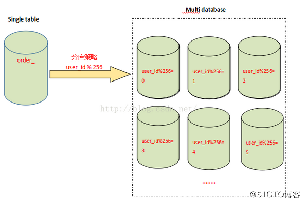
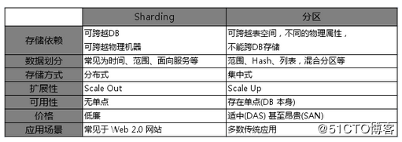

一、Scale Out（横向扩展）/Scale Up（纵向扩展）
Mysql的扩展方案包括Scale Out和Scale Up两种。
Scale Out（横向扩展）
Scale Out（横向扩展）：是指Application可以在水平方向上扩展。一般对数据中心的应用而言，Scale out指的是当添加更多的机器时，应用仍然可以很好的利用这些机器的资源来提升自己的效率从而达到很好的扩展性。
Scale Up（纵向扩展）
Scale Up（纵向扩展）：是指Application可以在垂直方向上扩展。一般对单台机器而言，Scale Up指的是当某个计算节点（机器）添加更多的CPU Cores，存储设备，使用更大的内存时，应用可以很充分的利用这些资源来提升自己的效率从而达到很好的扩展性。
二、Sharding（属于横向扩展）
Sharding 是把数据库横向扩展（Scale Out）到多个物理节点上的一种有效的方式，其主要目的是为突破单节点数据库服务器的 I/O 能力限制，解决数据库扩展性问题。Shard这个词的意思是“碎片”。如果将一个数据库当作一块大玻璃，将这块玻璃打碎，那么每一小块都称为数据库的碎片（Database Shard）。将整个数据库打碎的过程就叫做sharding，可以翻译为分片。
形式上，Sharding可以简单定义为将大数据库分布到多个物理节点上的一个分区方案。每一个分区包含数据库的某一部分，称为一个shard，分区方式可以是任意的，并不局限于传统的水平分区和垂直分区。一个shard可以包含多个表的内容甚至可以包含多个数据库实例中的内容。每个shard被放置在一个数据库服务器上。一个数据库服务器可以处理一个或多个shard的数据。系统中需要有服务器进行查询路由转发，负责将查询转发到包含该查询所访问数据的shard或shards节点上去执行。
Sharding 策略
哈希取模：hash(key) % N；
范围：可以是 ID 范围也可以是时间范围；
映射表：使用单独的一个数据库来存储映射关系。
MySql的Sharding策略包括垂直切分和水平切分两种。
垂直(纵向)拆分
垂直(纵向)拆分：是指按功能模块拆分，以解决表与表之间的io竞争。即将表按照功能模块、关系密切程度划分出来，部署到不同的库上。例如，我们会建立定义数据库workDB、商品数据库payDB、用户数据库userDB、日志数据库logDB等，分别用于存储项目数据定义表、商品定义表、用户数据表、日志数据表等。
如userid,name,addr一个表，为了防止表过大，分成2个表。
1 | userid,name |
表结构设计垂直切分。常见的一些场景包括:
大字段的垂直切分。单独将大字段建在另外的表中，提高基础表的访问性能，原则上在性能关键的应用中应当避免数据库的大字段
按照使用用途垂直切分。例如企业物料属性，可以按照基本属性、销售属性、采购属性、生产制造属性、财务会计属性等用途垂直切分.
按照访问频率垂直切分。例如电子商务、Web 2.0系统中，如果用户属性设置非常多，可以将基本、使用频繁的属性和不常用的属性垂直切分开
水平(横向)拆分
水平(横向)拆分：将同一个表的数据进行分块保存到不同的数据库中，来解决单表中数据量增长出现的压力。这些数据库中的表结构完全相同。当一个表中的数据量过大时，我们可以把该表的数据按照某种规则，例如userID散列、按性别、按省，进行划分，然后存储到多个结构相同的表，和不同的库上。例如，我们的userDB中的用户数据表中，每一个表的数据量都很大，就可以把userDB切分为结构相同的多个userDB：part0DB、part1DB等，再将userDB上的用户数据表userTable，切分为很多userTable：userTable0、userTable1等，然后将这些表按照一定的规则存储到多个userDB上。
表结构设计水平切分。常见的一些场景包括:
- 比如在线电子商务网站，订单表数据量过大，按照年度、月度水平切分。
- Web 2.0网站注册用户、在线活跃用户过多，按照用户ID范围等方式，将相关用户以及该用户紧密关联的表做水平切分。
- 例如论坛的置顶帖子，因为涉及到分页问题，每页都需要显示置顶贴，这种情况可以把置顶贴水平切分开来，避免取置顶帖子时从所有帖子的表中读取
三、分表和分区
分表从表面意思说就是把一张表分成多个小表，把一张表按一定的规则分解成N个具有独立存储空间的实体表。系统读写时需要根据定义好的规则得到对应的字表明，然后操作它。
分区则是把一张表的数据分成N多个区块，这些区块可以在同一个磁盘上，也可以在不同的磁盘上，在逻辑上看最终只是一张表，但底层是由N个物理区块组成的，分区实现比较简单，数据库mysql、oracle等很容易就可支持。分区对业务透明，分区只不过把存放数据的文件分成了许多小块，根据一定的规则把数据文件(MYD)和索引文件（MYI）进行了分割，分区后的表呢，还是一张表。
分表和分区的区别：
实现方式上
mysql的分表是真正的分表，一张表分成很多表后，每一个小表都是完整的一张表，都对应三个文件（MyISAM引擎：一个.MYD数据文件，.MYI索引文件，.frm表结构文件）。数据处理上
分表后数据都是存放在分表里，总表只是一个外壳，存取数据发生在一个一个的分表里面。分区则不存在分表的概念，分区只不过把存放数据的文件分成了许多小块，分区后的表还是一张表，数据处理还是由自己来完成。提高性能上
（1）分表后，单表的并发能力提高了，磁盘I/O性能也提高了。并发能力为什么提高了呢，因为查询一次所花的时间变短了，如果出现高并发的话，总表可以根据不同的查询，将并发压力分到不同的小表里面。磁盘I/O性能高了，本来一个非常大的.MYD文件现在也分摊到各个小表的.MYD中去了。
（2）mysql提出了分区的概念，我觉得就想突破磁盘I/O瓶颈，想提高磁盘的读写能力，来增加mysql性能。
在这一点上，分区和分表的测重点不同，分表重点是存取数据时，如何提高mysql并发能力上；而分区呢，如何突破磁盘的读写能力，从而达到提高mysql性能的目的。
- 实现的难易度上
分表的方法有很多，用merge来分表，是最简单的一种方式。这种方式和分区难易度差不多，并且对程序代码来说可以做到透明的。如果是用其他分表方式就比分区麻烦了。 分区实现是比较简单的，建立分区表，跟建平常的表没什么区别，并且对代码端来说是透明的。
分区的适用场景:
1 | 1. 一张表的查询速度已经慢到影响使用的时候。 |
1 | CREATE TABLE sales ( |
分表的适用场景
1 | 1. 一张表的查询速度已经慢到影响使用的时候。 |
分表的实现需要业务结合实现和迁移，较为复杂。
如何选择？
应该使用哪一种方式来实施数据库分库分表，这要看数据库中数据量的瓶颈所在，并综合项目的业务类型进行考虑。
如果数据库是因为表太多而造成海量数据，并且项目的各项业务逻辑划分清晰、低耦合，那么规则简单明了、容易实施的垂直切分必是首选。
而如果数据库中的表并不多，但单表的数据量很大、或数据热度很高，这种情况之下就应该选择水平切分，水平切分比垂直切分要复杂一些，它将原本逻辑上属于一体的数据进行了物理分割，除了在分割时要对分割的粒度做好评估，考虑数据平均和负载平均，后期也将对项目人员及应用程序产生额外的数据管理负担。
在现实项目中，往往是这两种情况兼而有之，这就需要做出权衡，甚至既需要垂直切分，又需要水平切分。
四、分表和分库
分表能够解决单表数据量过大带来的查询效率下降的问题，但是，却无法给数据库的并发处理能力带来质的提升。面对高并发的读写访问，当数据库master服务器无法承载写操作压力时，不管如何扩展slave服务器，此时都没有意义了。因此，我们必须换一种思路，对数据库进行拆分，从而提高数据库写入能力，这就是所谓的分库。
分表和分区都是基于同一个数据库里的数据分离技巧，对数据库性能有一定提升，但是随着业务数据量的增加，原来所有的数据都是在一个数据库上的，网络IO及文件IO都集中在一个数据库上的，因此CPU、内存、文件IO、网络IO都可能会成为系统瓶颈。当业务系统的数据容量接近或超过单台服务器的容量、QPS/TPS接近或超过单个数据库实例的处理极限等此时，往往是采用垂直和水平结合的数据拆分方法，把数据服务和数据存储分布到多台数据库服务器上。
与分表策略相似，分库可以采用通过一个关键字取模的方式，来对数据访问进行路由，如下图所示：

五、分库分表存在的问题
事务问题
在执行分库分表之后，由于数据存储到了不同的库上，数据库事务管理出现了困难。如果依赖数据库本身的分布式事务管理功能去执行事务，将付出高昂的性能代价；如果由应用程序去协助控制，形成程序逻辑上的事务，又会造成编程方面的负担。
跨库跨表的join问题
在执行了分库分表之后，难以避免会将原本逻辑关联性很强的数据划分到不同的表、不同的库上，这时，表的关联操作将受到限制，我们无法join位于不同分库的表，也无法join分表粒度不同的表，结果原本一次查询能够完成的业务，可能需要多次查询才能完成。
额外的数据管理负担和数据运算压力。
额外的数据管理负担，最显而易见的就是数据的定位问题和数据的增删改查的重复执行问题，这些都可以通过应用程序解决，但必然引起额外的逻辑运算，例如，对于一个记录用户成绩的用户数据表userTable，业务要求查出成绩最好的100位，在进行分表之前，只需一个order by语句就可以搞定，但是在进行分表之后，将需要n个order by语句，分别查出每一个分表的前100名用户数据，然后再对这些数据进行合并计算，才能得出结果。
六、分片（Sharding）和分区（Partition）
sharding和partition的区别：

参考文章：
mysql分片、分区、分表、分库
Mysql分表和分区的区别、分库和分表区别
阿里P8架构师谈：数据库分库分表、读写分离的原理实现，使用场景